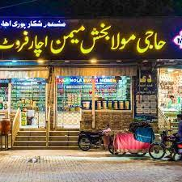

src="concept.jpeg">
START WITH THE NAME OF ALLAH

__________________________________________________________________________________________________________________________________________________________________
 |
ABOUT |
SHIKARPUR: It is, of course, available all over the country and even abroad but buying Shikarpur achaar in Shikarpur is an experience in itself.
Every market has an achaar shop after every two or three shops selling something else.
Facing the famous Ghanta Ghar which gives the correct time at least twice in 24 hours, in Lakhi Dar is Moula Bakhsh Memon, or MBM, the oldest achaar shop of the city.“Achaar from our shop is available in Saudi Arabia, the UAE and the UK, too,” says Maqsood Ahmed, a salesman at the shop
___________________________________________________________________________________________________________________________________________________________
The concept of pickling originated after man felt need to preserve food for a long time. Four hundred years back, it was India, which started to prepare pickle, and today it has become an essential item for the meal in almost every house. Amidst a wide variety of pickles present in South Asia, the mouth-watering Sindh’s northern city Shikarpur’s pickle is highly dynamic and tasty. The distinctive feature in Shikarpur’s pickle that makes it unique, tasty and different from all other pickles made in Pakistan is its ground water.
|  |
SHIKARPUR CITY ACHAR (PICKLE) HOUSES |
Shikarpur city houses around 12 pickle manufacturing factories including Haji Moala Bux Memon achaar, Haji Sikander Memon achaar, Tahir Shabir Shaikh achaar, Nisar Ahmed Memon achaar, Shah Nawaz Soomro achaar, Soomra achaar and Nawab Memon achaar. The factories have set-up huge network of shops in the city. Moreover, there are some home-based pickle manufacturing set-ups established by women and are sold from there. The homemade pickles as compared to pickles made by the companies are more tasty and delicious. Haji Moala Bux Memon and Haji Sikandar Memon companies being biggest companies in pickle industry in the city have established a network of branches in big cities in the country including Sukkur, Hyderabad, Karachi, Quetta, and Peshawar. Moreover, these both companies supply various varieties of pickles to every nook and corner of the country and the super quality pickles to the US, UK, Saudi Arabia, Afghanistan, Iran and UAE etc.
A wide variety of pickles are manufactured in Shikarpur. The most popular of all the varieties of Shikarpur’s mango pickle is the mixed achaar comprising carrots, turnips, onions, cauliflower, chickpeas, garlic, green chillies, lime and mango. Along with mango pickle, there are other enormous varieties of high quality pickles which include vegetable pickle, channa pickle, chicken pickle, beef pickle, green chillies pickle and mutton pickle. Pickles serve as appetisers and help in digestion of foods by aiding flow of gastric juices. It is believed that fermented pickles also have beneficial bacteria that possess the potential of controlling harmful intestinal microbes.
 |
QUALITY |
From quality and price perspectives, two kinds of pickles—local quality and export quality— are manufactured in Shikarpur. For local market, it is made of the usual mustard oil and for export quality and for export; the super quality pickles are prepared in soybean oil, which keeps pickle fresh for longer period of time. We can say the pickle has a longer shelf life. As there are various varieties of pickles made in Shikarpur, therefore, the prices of pickle vary according to its varieties. One can buy easily an 800 gramme bottle of pickle for Rs 80 to Rs 100 and a kilogramme jar of the export quality is for Rs 200 to Rs 300.
According to customers’ demand Pickle is packaged in glass bottles and polythene bags and buckets of various sizes and weights such as glass bottle and polythene bag of 450 grammes, glass bottle and polythene bag of 1kg, and polythene bag of 5kg, polythene bucket of 16kg and polythene bucket of 32kg.
Procedure of preparing pickle is not too strenuous and difficult but it is quite simple and easy. Before making it eatable, fruit and vegetable items such as unripe green mangoes, carrots, turnips, onions, garlic, lemon, green tamarind, ginger and green chillies are preserved in salt, mustard oil, vinegar, fenugreek seeds and water. To make pickle eatable, some days before supplying it to customers it is freshly prepared in ingredients, which include spices, oil, vinegar, salt and red chillies etc. Pickle manufactured in vinegar take about fifteen days to be ready for eating, while the super quality pickle prepared in soybean becomes eatable after the process of one month. The very taste of the pickle is highly sour and spicy that makes it a delicious and mouth-watering. To make their lunch, dinner and supper tasty, people usually use Shikarpur’s pickles.